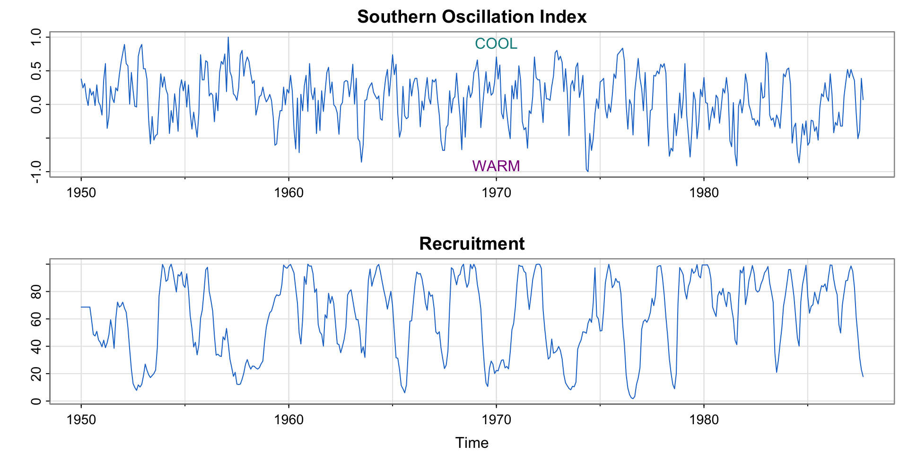
时间序列分析与预测
第一讲：导论
黄嘉平
深圳大学中国经济特区研究中心
粤海校区汇文楼1510
https://huangjp.com/
时间序列分析第一步
什么是时间序列数据？
数据的基本结构
变量：描述观测对象的某个特定特征的量，例如身高、收入、年龄等
如何区分观测值：
依个体区分：每一个个体为一个观测单位，例如个人、企业、国家等
依时间节点区分：每一个时间点为一个观测单位，例如年、月、日等
基本数据类型：
时间序列数据（time series data）：对同一个体在多个时间点进行观测
横截面数据（cross-sectional data）：对多个个体在同一时间点进行观测
面板数据（panel data）：对多个个体在多个时间点进行重复观测
GDP 是什么类型的数据？
不同类型的 GDP 数据
GDP 是变量，结合不同的观测方式会形成不同的数据类型
时间序列 GDP
例如，中国在2000-2022年间的年度GDP是时间序列数据
横截面 GDP
例如，G20各国在2022年的年度GDP是横截面数据
面板 GDP
例如，G20各国在2000-2022年间的年度GDP是面板数据
时间序列分析的目的和方法
为什么要分析时间序列数据？
时间序列数据在生活中随处可见
通过分析时间序列数据，可以帮助我们更好的预测未来可能发生的情况
怎样分析时间序列数据？
首先要对数据进行观察 \to 变化趋势是什么？是否存在周期性？
然后假设数据生成模型 \to 白噪声、自回归、随机游走等
之后利用手中的数据对模型进行拟合 \to 求出模型中的关键参数
验证模型、选择模型 \to 如果需要可以回到第 2 步
最后利用模型预测未来
时间序列数据的例子 1
例 1.1 强生公司的季度每股收益（quarterly earnings per share, QEPS）
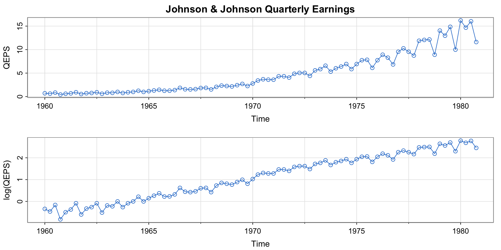时间序列数据的例子 2
例 1.2 全球变暖与气候变化：纵轴为当年的平均地表温度与 1951-1980 年间的平均值之差
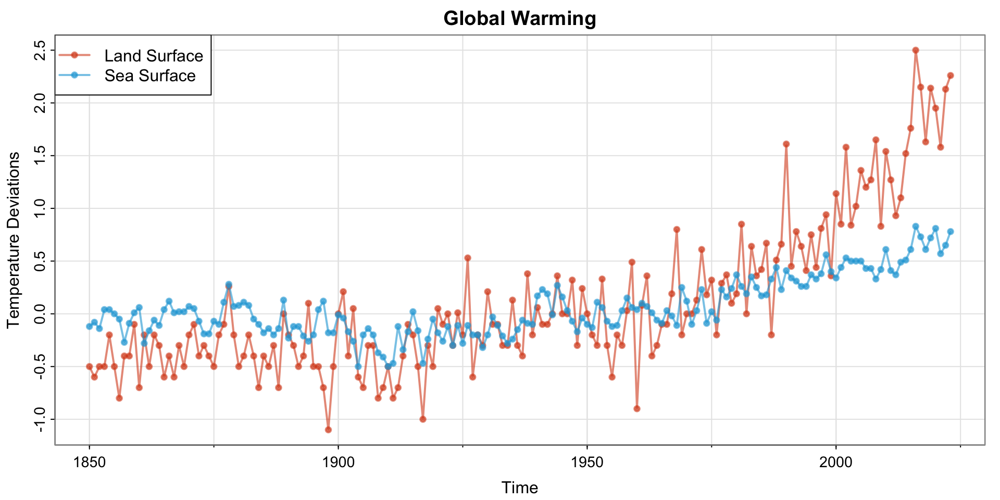更多数据可参考 https://climate.nasa.gov/
时间序列数据的例子 3
例 1.3 道琼斯工业平均指数（DIJA）
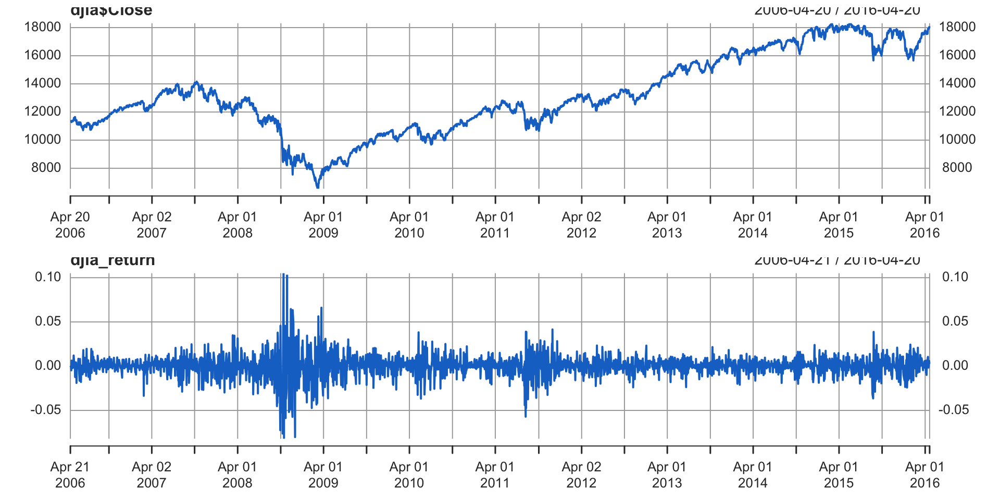时间序列数据的例子 4
ENSO (El Niño-Southern Oscillation) 厄尔尼诺南方涛动是赤道地区太平洋海面温度和气压的一种综合气候现象。
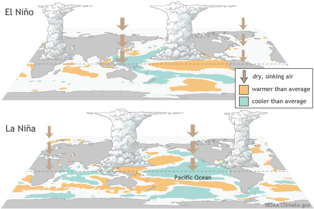
厄尔尼诺（El Niño）现象指太平洋中东部海面温度过高。
拉尼娜（La Niña）现象指该区域海面温度过低。
南方涛动指该地区海面气压和西太平洋地区气压的相对变化。
时间序列数据的例子 4
例 1.4 厄尔尼诺南方涛动指数 (El Niño-Southern Oscillation Index)1 与新鱼数量指数
时间序列数据的例子 5

猞猁（shēlì, lynx）是中型猫科动物，喜欢捕食小型啮齿动物和鹿等，其中白靴兔（snowshoe hare）是加拿大猞猁最喜欢的猎物。
图中的数据是加拿大哈德逊湾公司收购的皮毛数量，可以代表种群数量的变化。
时间序列数据的例子 5
例 1.5 捕食者与猎物：加拿大猞猁 (Canada lynx) 与白靴兔 (snow shoe hare)

时间序列数据的例子 6
fMRI（functional magnetic resonance imaging，功能磁共振成像）是通过核磁共振现象观测脑活动的一种技术。它常被用来研究脑的哪些区域对特定的外部刺激产生反应，从而尝试理解脑的工作原理。
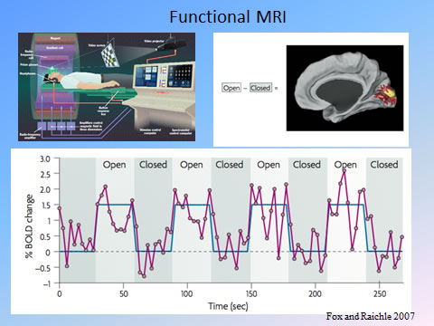
时间序列数据的例子 6
脑的某个区域的神经元活动时，其消耗的能量和氧会增加。为了补充氧气，附近血管中的血液流量会暂时性增加，使局部血液中的氧合血红蛋白浓度增加，脱氧血红蛋白浓度减少。前者的磁共振强度更高。由血氧浓度变化引起的 MRI 信号强度变化称为 BOLD（blood oxygenation level dependent, 血氧水平依赖）。
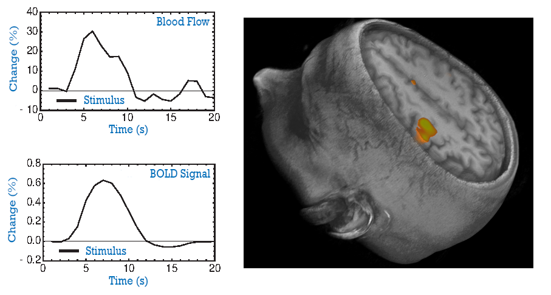
从图中可见，从刺激开始到 BOLD 信号达到峰值之间存在 6 秒左右的延迟。
时间序列数据的例子 6
例 1.6 fMRI 图像
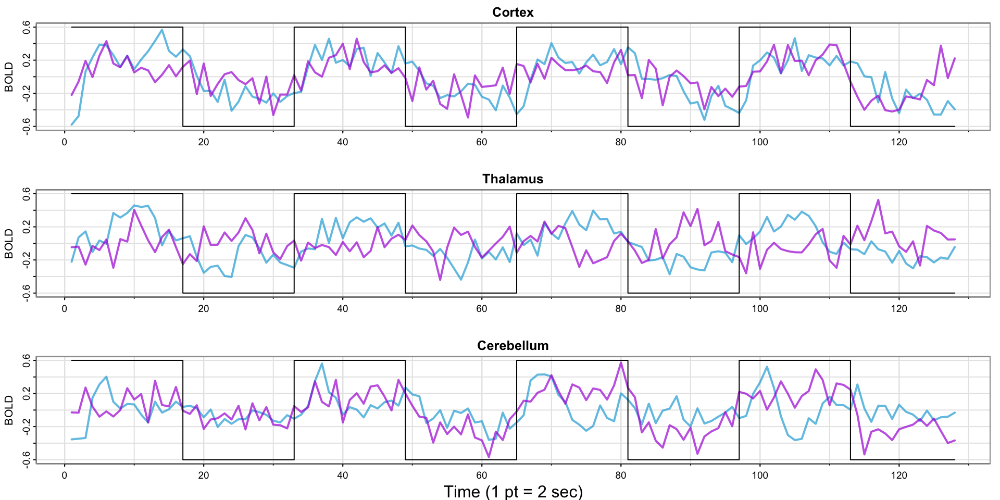在脑皮层（cortex）、丘脑（thalamus）和小脑（cerebellum）中各取两个部位进行观测。
试验针对麻醉的志愿者的手部进行强电流刺激（100Hz, 50mA）以模拟手术时皮肤被切割的痛感。框线代表刺激与否，每次刺激和间隔时长为 32 秒。
R 和 RStudio 第一步
R 的几种用法
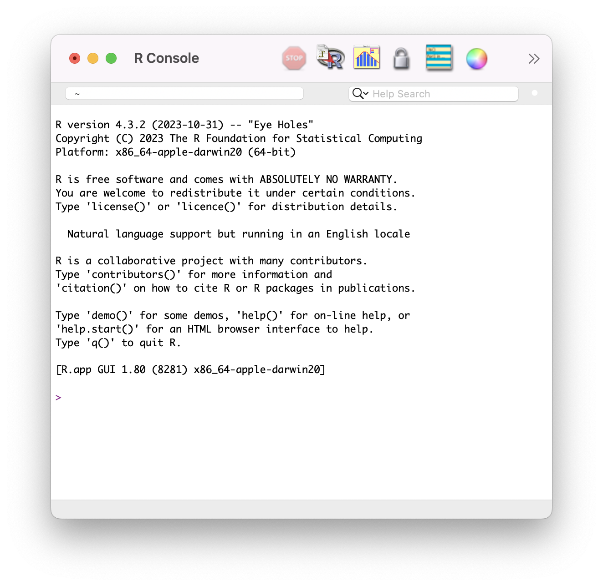
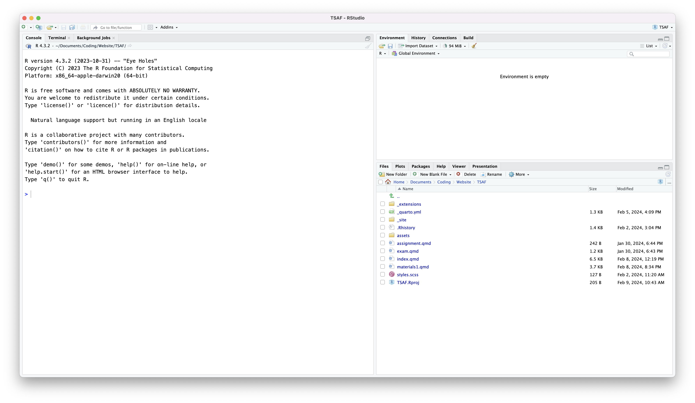
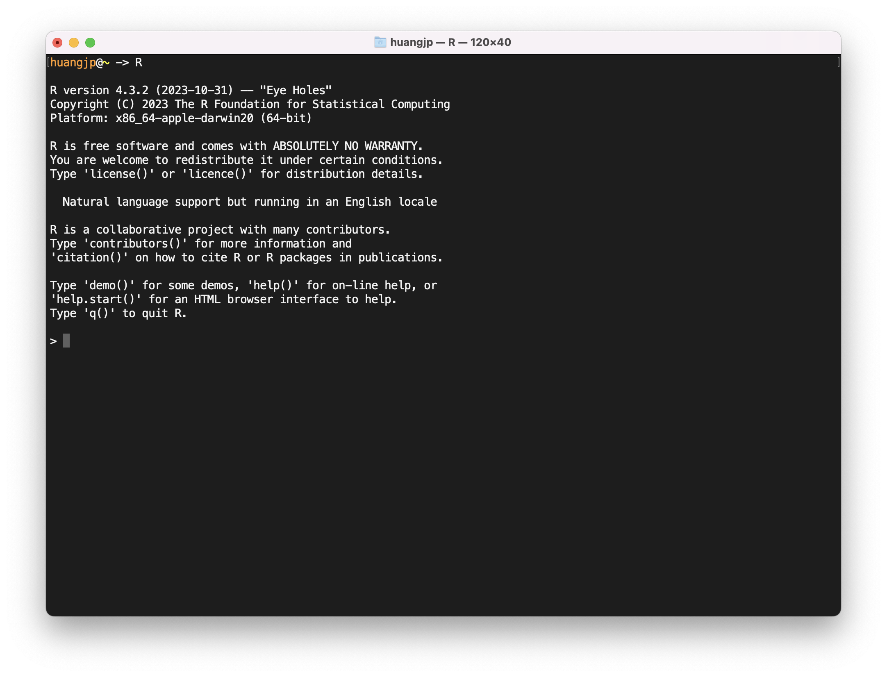
R 的命令与执行结果
数值带入与运算
探索数据
[1] "ts"[1] 1949.000 1960.917 12.000 Jan Feb Mar Apr May Jun Jul Aug Sep Oct Nov Dec
1955 242 233 267 269 270 315 364 347 312 274 237 278
1956 284 277 317 313 318 374 413 405 355 306 271 306
1957 315 301 356 348 355 422 465 467 404 347 305 336时间序列图
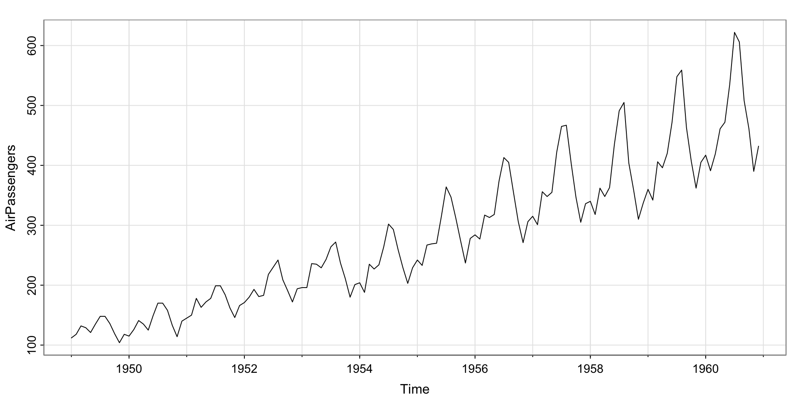tsplot 是 astsa 包中的命令，需要用 library 命令调用后才能使用
vector 和 matrix
[1] 10 20 30 40 50[1] "新学期" "新气象"[1] "character"[1] TRUE访问变量中特定的值
Data Frame
data frame 是 R 中储存多元数据的一种形式，以 matrix 形式存在，每一列代表一个变量，每一行代表一个观测值
a b c
1 11 19 100
2 12 29 101
3 14 39 102统计分析
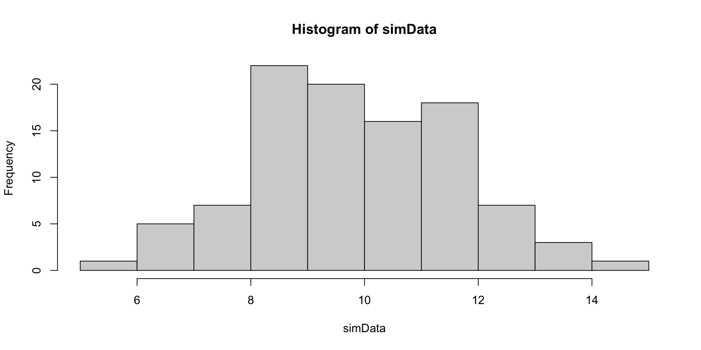时间序列数据
mydata <- ts(simData, start = 1980, frequency = 4) # 将 simData 转变为时间序列 "ts" 数据
# 设起始时间为 1980 年，频度为季度
mydata Qtr1 Qtr2 Qtr3 Qtr4
1980 8.590432 12.738864 13.527495 10.605377
1981 9.366908 12.537746 12.109877 9.341081
1982 7.561175 8.841184 11.437164 9.020002
1983 9.262016 9.103535 12.575601 11.102918
1984 12.070868 7.033637 7.824323 11.161861
1985 8.912599 13.494598 10.185011 8.518554
1986 11.089235 9.774326 9.825322 11.396924
1987 10.388691 9.159256 10.099798 9.875571
1988 9.021521 10.507555 11.187148 10.388298
1989 7.290094 6.251527 8.170309 8.056265
1990 5.636105 13.085067 10.522897 9.174636
1991 8.577362 10.764758 12.629438 14.554467
1992 12.633202 11.099669 8.960895 10.377175
1993 6.389411 10.650284 9.929486 12.970603
1994 8.452212 8.975750 11.350229 7.568048
1995 8.772953 12.992118 9.838188 9.277183
1996 11.721349 9.115946 9.273120 9.049509
1997 8.885557 11.419807 7.939586 7.083347
1998 6.712625 6.382576 8.287647 6.285810
1999 11.454300 10.069194 10.180675 9.814681
2000 12.046657 6.875670 12.703627 10.188280
2001 12.345928 9.571350 7.403219 10.723513
2002 11.099041 7.808599 10.079300 11.581863
2003 11.461207 8.376340 11.103811 11.757871
2004 9.558180 13.718927 10.319889 9.589425错误提示
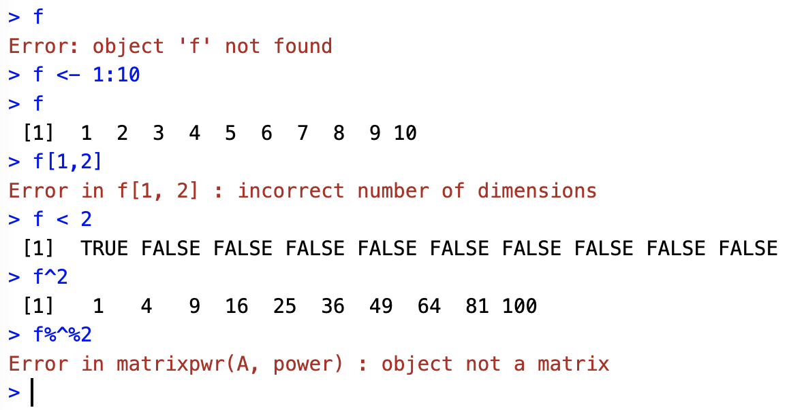学会用 script 文件工作
\to RStudio 操作演示
进一步学习
我们会随着课程的进展逐渐介绍更多 R 的命令
如何自学（或复习）R 的基本用法？
参考学习资料中列举的资料
有效利用 RStudio > Help > R Help 中的内容
如果遇到运行错误，学会根据错误提示寻找问题所在
熟能生巧